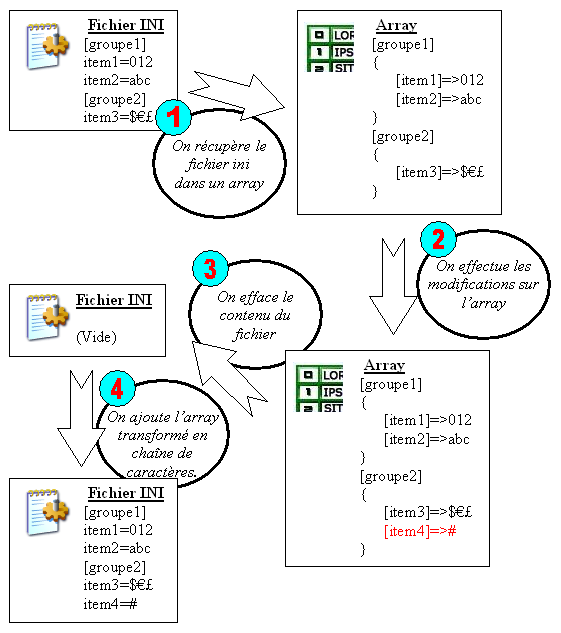
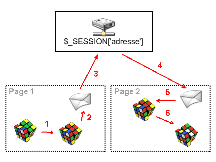
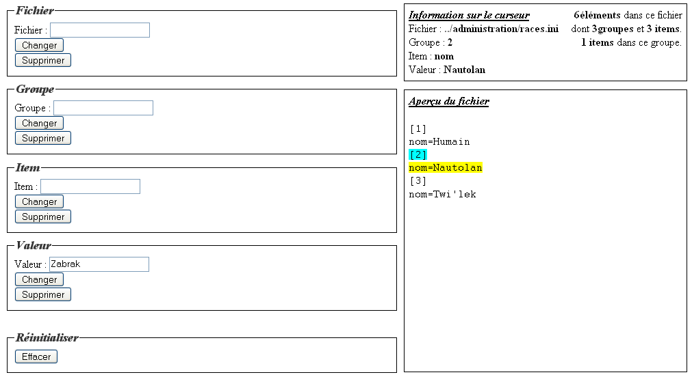
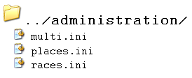

Ce big-tuto est destiné à tous ceux qui se disent régulièrement : "c'est un peu con de faire une table dans ma base de données juste pour ça", à tous ceux qui n'ont pas de base de données mais qui souhaiteraient enregistrer des informations ; enfin, plus généralement, la sauvegarde INI a des avantages sur la base de données.
Pas de parse_ini_file dans ce tuto Après de vifs commentaires, je me sens obligé de parler de cette fonction en introduction pour en être ensuite débarrassée :D Le langage ini est flexible. Il n'y a pas de règle stricte pour lire un fichier ini. parse_ini_file est une fonction qui lit sommairement les fichiers ini et renvoie un array simple. Dans ce tuto, nous utiliserons les fichiers ini pour le stockage de données, nous allons donc créer une fonction renvoyant un array à deux niveaux en utilisant le plein potentiel de ces fichiers. Je n'ai pas inventé cette technique mais sachez qu'après lecture du tuto, vous pourrez créer votre propre langage et l'adapter à vos besoins comme bon vous semble.
Voilà une question qui doit quand même trotter dans quelques têtes : C'est quoi ces fameux fichiers ini ? o_O
Alors, pour la petite histoire, "ini" est leur petit nom (leur extension), ils s'appellent en fait "fichiers d'initialisation" et sont omniprésents dans le système windows ; bien que les plus importants aient été remplacés par des bases de registre dans les dernières versions du système d'exploitation.
Vous allez maintenant découvrir une de ces étranges créatures.
Comme dit plus haut, les fichiers .ini portent l'extension .ini, mais leur contenu n'est constitué que de texte (un peu comme les fichiers .html ou .php).
Voici à quoi ressemble un fichier .ini :
Citation : exemple.ini
[informations générales] date=12/02/06 candidat=Jean Dupont note=12 ;tout à fait correct [correction] date=15/02/06 correcteur=Janine Dujardin
Voilà : dans cet exemple, j'ai imaginé qu'on veuille sauvegarder les informations relatives à chaque copie d'un examen dans un fichier. Ceci serait donc le fichier pour la copie de Jean Dupont.
Explications
La première ligne est le nom du groupe : "informations générales", toutes les données qui suivent appartiennent à ce groupe jusqu'à ce qu'on en change. Les trois lignes qui suivent sont des items, c'est-à-dire des valeurs stockées. Dans date=12/02/06, date est le nom de la variable et 12/02/06, son contenu. Enfin, la ligne écrite en vert est un commentaire, toute ligne commençant par un point virgule sera ignorée.
Equivalent en php
<?php
$exemple["informations_generales"]=array(
"date"=>"12/02/06",
"candidat"=>"Jean Dupont",
"note"=>"12"
);
//tout à fait correct
$exemple["correction"]=array(
"date"=>"12/02/06",
"correcteur"=>"Janine Dujardin"
);
?>
Comme je vous le montre ci-dessus, la structure d'un fichier .ini est comparable à celle d'un array associatif à deux niveaux.
Des exemples concrets d'utilisation
Personnellement, les fichiers .ini m'ont servi dans une galerie d'images pour toutes les options et enregistrements. Ils m'ont aussi été utiles dans la création d'un jeu en ligne pour sauvegarder des informations telles que les compétences d'une race, ou encore les actions possibles sur une case de la map. Mais le .ini peut servir à plein d'autres choses :
Un fichier .ini se lit en pointant un curseur (virtuel) sur une variable. On va dire en langage PHP : "je choisis le fichier mon_fichier.ini, je vais dans le groupe mon_groupe et dans l'item mon_item". On peut maintenant récupérer la valeur à cet endroit et la modifier.
Et en PHP, ça donne quoi ??
Effectivement on n'a toujours pas vu l'ombre d'un code PHP. Et ce qui va nous faciliter la vie pour trouver la manière de lire ces fichiers .ini, c'est que chaque ligne du fichier correspond à une instruction. Et si je demande quelle est la fonction PHP qui lit un fichier ligne par ligne, vous me répondez tous en coeur ... non ? ... Eh bien c'est file(), cette fonction magique qui retourne un tableau où chaque ligne est contenue dans une entrée du tableau. Et le deuxième outil qui va nous être utile : foreach. Voici donc comment lire ligne par ligne un fichier :
<?php
$tableau_de_lecture=file($fichier);
foreach($tableau_de_lecture as $ligne)
{
// Ici on traite une ligne, par exemple, on peut compter la longueur de chaque ligne en faisant :
echo strlen($ligne);
}
?>
Et maintenant, il nous faut détecter, pour chaque ligne, s'il y a ouverture de groupe ou un item. Voici un fichier que je vous conseille de prendre pour essayer de trouver le code : http://kyle.katarnls.free.fr/fichier_ini.zip. C'est une liste de membres avec différentes informations pour chacun, en imaginant qu'ils puissent remplir un formulaire sans renseigner tous les champs. Si on avait utilisé une base de données, il y aurait plein de champs vides et il faudrait changer la structure de la table à chaque fois qu'on rajoute une donnée au formulaire. Vous pouvez donc déjà constater un avantage de la méthode.ini.
Bon : au boulot, je vous laisse chercher le code pour détecter, je le rappelle, les groupes et les items ...
<?php
if(file_exists($fichier) && $fichier_lecture=file($fichier))
foreach($fichier_lecture as $ligne)
{
if(preg_match("#^\[.+\]$#",$ligne))
//Des crochets au début et à la fin, ça, c'est un groupe, pardi !
else
if(!preg_match("#^\;#",$ligne)) //S'il n'y a pas de point-virgule, ce n'est pas un commentaire
//Donc c'est un item
}
else
die("Le fichier est introuvable ou incompatible");
?>
Peut-être que certains n'aiment pas cette façon de coder et préfèrent quand il y a des accolades. Comme j'ai un avis partagé sur le sujet, je vous donne la version aérée :
<?php
if(file_exists($fichier) && $fichier_lecture=file($fichier))
{
foreach($fichier_lecture as $ligne)
{
if(preg_match("#^\[.+\]$#",$ligne))
{
//Des crochets au début et à la fin, ça, c'est un groupe, pardi !
}
else
{
if(!preg_match("#^\;#",$ligne)) //S'il n'y a pas de point-virgule, ce n'est pas un commentaire
{
//Donc c'est un item
}
}
}
}
else
{
die("Le fichier est introuvable ou incompatible");
}
?>
Vous savez maintenant différencier les items des groupes à la lecture, nous allons dès le prochain chapitre récupérer notre première valeur.
Très bien : je vous suggère pour vos essais d'utiliser le fichier dans cette archive : http://kyle.katarnls.free.fr/fichier_ini.zip, de mettre membres.ini au même endroit que votre fichier .php.
Avant de vous donner le code de votre fichier .php (qui, je le rappelle, doit afficher une valeur du fichier), nous allons réfléchir à ce qu'il y aura dans ce code. Tout d'abord, une valeur est à un endroit précis, on peut dire à une adresse où le nom du fichier serait la ville, le nom du groupe serait la rue et le nom de l'item serait le numéro de la maison. Donc, les trois premières lignes auront pour but de donner l'adresse avec ces trois variables (vous pouvez vous amuser à créer un formulaire pour les entrer). Puis la quatrième ligne initialisera la valeur à false : comme ça, si à la fin cette variable vaut toujours false, c'est qu'aucune valeur n'a été trouvée, et on pourra afficher un message d'erreur.
Donner l'adresse
On entre le nom du fichier, du groupe, de l'item et on initialise $valeur à false. Si après recherche, $valeur vaut toujours false, cela voudra dire que notre adresse ne mène à aucune valeur.
<?php
// Si le fichier existe et qu'on arrive à le lire avec file()
if(file_exists($fichier) && $fichier_lecture=file($fichier))
// Ici on lance la recherche
else
echo "Le fichier est introuvable ou incompatible<br />";
?>
La recherche
Pour analyser une syntaxe, le mieux, c'est encore les REGEXP. Rien de très compliqué cependant : Un groupe commence par [ et termine pas ]. Donc on utilisera les morceaux suivants :
^\[ signifie commence par un crochet
(.+) c'est le nom du groupe qu'on va récupérer
\]$ termine par un crochet
Pour l'item, on va juste regarder si la ligne commence par le nom de l'item qu'on cherche donc si la position de "nom_item=" dans la ligne est égale à 0. La fonction permettant de savoir ça est strpos et donc le code est strpos($ligne,$item_recherche."=")===0, il y a bien 3 "=" et c'est important parce qu'avec seulement 2. Le triple-égal vérifie que les types soient les même contrairement au double. Un petit tableau devrait aider :
Ceci
renvoie ça
strpos('a=c','a')
0
strpos('b=c','a')
false
0==false
true
0===false
false
Dernière chose, on va utiliser trim(), c'est une fonction de nettoyage, elle enlève tous les espaces au début et à la fin d'une chaîne. Je l'utilise pour détecter les groupes et les commentaires mais pas les items et valeurs car il se pourrait qu'un item commence ou qu'une valeur termine par un espace qu'il faudrait alors conserver. Attention, voici le plus gros morceau à mettre à la place du commentaire # // Ici on lance la recherche # dans le précédent code :
<?php
foreach($fichier_lecture as $ligne)
{
$ligne_propre=trim($ligne);
if(preg_match("#^\[(.+)\]$#",$ligne_propre,$matches))
$groupe=$matches[1];
else
if($ligne_propre[0]!=';')
if($groupe==$groupe_recherche)
if(strpos($ligne,$item_recherche."=")===0) // Si la ligne commence par le nom de l'item suivi de =
$valeur=end(explode("=",$ligne,2));
elseif($ligne==$item_recherche) // Si la ligne contient juste le nom de l'item
$valeur='';
}
?>
On me souffle dans l'oreillette que je n'ai pas défini les fonctions explode() et end() Merci à Lo-X !
Toutes les lignes suivantes font la même chose, à vous de prendre ce que vous comprenez le mieux :
Bref, explication du code : On lit chaque ligne du fichier : le premier preg_match() détecte la présence d'un groupe. Si c'en est un, on stocke sa valeur dans $groupe. $groupe contient donc toujours le groupe en cours de lecture. La condition $ligne[0]!=';' vérifie que l'on n'est pas en train de lire un commentaire (que le premier caractère de la ligne n'est pas un point-virgule). Et le dernier preg_match() compare le nom de l'item avec celui qui est recherché ; si c'est le cas et que le groupe courant est celui de l'adresse, alors on entre la valeur de l'item dans $valeur.
o_O Mais... et si ma ligne n'est ni un item ni un groupe, ni un commentaire ?
Eh bien justement, ce qui n'est ni un commentaire ni un groupe EST un item. Exemple : la ligne ressource>52. Ici, on considère que le nom de l'item est "ressource>52" et que la valeur est "" (une chaîne vide). Retenez bien ceci :
une ligne qui commence par [ et se termine par ] est une ouverture de groupe ;
une ligne commençant par ; est un commentaire ;
toutes les autres lignes sont des entrées item/valeur.
Afficher le résultat
On peut terminer le code en affichant la valeur trouvée s'il y en a une, et un message d'erreur s'il n'y en a pas :
Certains ont peut-être déjà essayé de rajouter un formulaire pour choisir l'adresse. Et comme au final, je vous ferai faire un big formulaire avec toutes les manipulations possibles ( :euh: mais non ne vous découragez pas), alors voici comment faire.
Le début du fichier
<?php
if(isset($_POST["envoyer"]))
{
$fichier=$_POST["fichier"];
$groupe_recherche=$_POST["groupe"];
$item_recherche=$_POST["item"];
$valeur=false;
if(file_exists($fichier) && $fichier_lecture=file($fichier))
foreach($fichier_lecture as $ligne)
{
$ligne_propre=trim($ligne);
if(preg_match("#^\[(.+)\]$#",$ligne_propre,$matches))
$groupe=$matches[1];
else
if($ligne_propre[0]!=";")
if($groupe==$groupe_recherche)
if(strpos($ligne,$item_recherche."=")===0)
$valeur=end(explode("=",$ligne,2));
elseif($ligne==$item_recherche)
$valeur='';
}
else
echo "Le fichier est introuvable ou incompatible<br />";
if($valeur===false)
echo "Groupe ou item inexistant";
else
echo "Valeur trouvée : ".$valeur;
}
?>
Dans ce chapitre, je vais vous donner tous les outils nécessaires pour l'écriture dans un fichier .ini de sorte qu'à la deuxième partie de ce tuto, nous puissions commencer à monter le système de lecture / écriture.
<?php
$filename = "membres.ini"; //Dans le cas de notre fichier ini
if(is_writable($filename))
{
echo "Le fichier est accessible en écriture";
}
else
{
echo "Le fichier n'est pas accessible en écriture";
}
?>
Si jamais il n'était pas accessible en écriture, il faudrait alors modifier son chmod. Le chmod est un code donnant accès en lecture, écriture et exécution au propriétaire, au groupe et au public, je n'entre pas dans les détails, voici le code pour le modifier si nécessaire :
<?php
if(chmod ("membres.ini", 0644)) // Toujours donner 4 chiffres car la notation du mode est octale (et donc aucun chiffre supérieur à 7 dans cet entier).
{
echo "Le fichier est désormais lisible par tous et modifiable par le propriétaire.";
}
else
{
echo "Le changement de chmod a échoué.";
}
?>
Si le changement échoue, c'est que votre serveur ne le permet pas ou que le chemin d'accès du fichier est protégé.
Votre fichier est maintenant -normalement- prêt à être modifié ! :D
Tout d'abord, voici comment on procède pour écrire dans un fichier : on ouvre le fichier, on le modifie et on le ferme, exactement comme avec le Bloc-notes. On va donc d'abord voir les fonctions d'ouverture et de fermeture d'un fichier.
fopen() et fclose()
fopen()
fopen() s'emploie de la façon suivante :
<?php
$handle = fopen("membres.ini", "a+");
?>
Et que vaut la variable $handle, me direz-vous ? Eh bien c'est une ressource de type stream (flux), autrement dit on ne peut pas l'afficher, on va juste s'en servir en la passant en argument des autres fonctions de manipulation de fichier. Pour en finir avec cette fonction fopen(), le premier argument est donc le nom du fichier et le deuxième est le mode. Voici les modes les plus courants :
Lettre
Lecture
Écriture
Curseur
Spécial
r
oui
non
au début
-
r+
oui
oui
au début
-
w
non
oui
au début
Efface le contenu du fichier
w+
oui
oui
au début
Efface le contenu du fichier Crée le fichier s'il n'existe pas
a
non
oui
à la fin
Crée le fichier s'il n'existe pas
a+
oui
oui
à la fin
Crée le fichier s'il n'existe pas
On a maintenant ouvert notre fichier, et vous devez savoir qu'il est possible d'ouvrir plusieurs fichiers en même temps en donnant différents noms à vos ressources, vous pouvez ainsi manipuler les fichiers ensemble.
fclose()
Une fois toutes les opérations faites, on ferme le fichier ainsi :
<?php
fclose($handle);
?>
fwrite()
Tout d'abord, sachez que cette fonction a un alias : fputs(), c'est-à-dire que vous pouvez utiliser l'une ou l'autre de la même façon ; moi, je préfère écrire plutôt que mettre (cf. nom de ces fonctions en français). Cette fonction prend en premier paramètre la flux ressource et en second, la chaîne de caractères à insérer et elle renvoie le nombre d'octets écrits ou false en cas d'échec.
Cette fonction n'existe qu'à partir de PHP 5, si votre version de PHP est plus ancienne, utilisez le premier code ci-dessous. Et enfin file_put_contents() qui est l'équivalent de :
Attention : cette fonction magique a ses limites, car elle agit comme si on avait entré le mode w ou w+ à fopen(). Vous êtes donc obligés de réutiliser les trois autres fonctions si vous voulez entrer un autre mode. De plus, cette fonction n'existe que depuis PHP 5, elle n'est donc pas disponible sur tous les hébergeurs. Certains encore exigent une extension .php5 des fichiers ; si vous n'êtes pas sûrs, utilisez plutôt la première méthode.
C'est le principe de la modification : on récupère le contenu d'un fichier, on le change puis on remplace l'ancien contenu par le nouveau. Voilà le schéma de l'opération en ce qui concerne le .ini :

Et là-dessus, on sait tout faire sauf transformer un array en texte pour fichier .ini (pas de panique : on le verra dans le chapitre suivant). La dernière chose dont vous avez besoin avant qu'on finisse ce chapitre, c'est de méthodes pour effacer le contenu d'un fichier.
Pour ça, vous avez le mode w (et w+) de fopen(), ou la fonction file_put_contents() qui efface le fichier avant d'écrire dedans. Enfin, la dernière méthode consiste à supprimer le fichier avec la fonction unlink().
<?php
$filename = "membres.ini";
if(unlink($filename))
{
echo "[" . $filename . "] a été supprimé.";
}
else
{
echo "La suppression de [" . $filename . "] a échoué.";
}
?>
Mais si le fichier à supprimer n'existe pas, unlink() renvoie une erreur : donc, pour éviter cette tache dans la page, on vérifie que le fichier existe avec file_exists().
<?php
if(file_exists($filename))
{
echo "Le fichier existe.";
}
else
{
echo "Le fichier n'existe pas.";
}
?>
Donc si le fichier n'est pas protégé, il suffit de mettre cette ligne de code pour le supprimer :
<?php
$filename="membres.ini";
//Ici, on ne sait si le fichier $filename existe
if(file_exists($filename)) unlink($filename);
//Ici, on n'a aucun message d'erreur et on est sûrs que le fichier $filename n'existe plus
?>
Après le QCM, vous serez parés à créer le système complet de gestion des fichiers .ini.
Et voilà, vous avez maintenant tout ce qu'il vous faut : nous allons pouvoir créer notre page de gestion des fichiers .ini.
Voilà, vous êtes arrivés à la moitié de ce tuto ; désormais, il va y avoir beaucoup plus de pratique. ;)
Nous allons maintenant voir comment récupérer un array depuis un fichier .ini et inversement (en utilisant ce qu'on a vu précédemment) ; il nous sera utile de savoir modifier un array, vous savez bien entendu comment faire... :euh: Bon : pour ceux qui auraient un doute, voici les trois opérations qu'on peut lui faire subir.
Pour récupérer le fichier entier dans un array, nous allons utiliser le code de la première partie en le changeant à peine :
<?php
$fichier="membres.ini";
$array=array();
if(file_exists($fichier) && $fichier_lecture=file($fichier))
foreach($fichier_lecture as $ligne)
{
if(preg_match("#^\[(.*)\]\s+$#",$ligne,$matches))
{
$groupe=$matches[1];
$array[$groupe]=array();
}
elseif($ligne[0]!=';')
{
list($item,$valeur)=explode("=",$ligne,2);
if(!isset($valeur)) // S'il n'y a pas de valeur
$valeur=''; // On donne une chaîne vide
$array[$groupe][$item]=$valeur;
}
}
else
echo "Le fichier est introuvable ou incompatible<br />";
// Et voilà, $array contient le fichier membres.ini sous la forme d'un array à 2 niveaux.
?>
Reportez-vous au premier chapitre expliquant comment récupérer une valeur ; seule différence ici : on rentre les groupes et items dans $array.
Voici donc la manipulation inverse dans laquelle on va également se servir de foreach, mais en utilisant en plus la clé, par exemple, pour un array structuré comme ça :
On peut parcourir cet array avec foreach($array as $key => $value) souvent utile quand on a un array associatif.
<?php
$fichier_save="";
foreach($array as $key => $groupe_n)
{
$fichier_save.="\n[".$key."]"; // \n est une entrée à la ligne
foreach($groupe_n as $key => $item_n)
{
$fichier_save.="\n".$key."=".$item_n;
}
}
$fichier_save=substr($fichier_save, 1); // On enlève le premier caractère qui est -si vous regardez bien- forcément une entrée à la ligne inutile
if(false===@file_put_contents("membres.ini", $fichier_save))
{
echo "Impossible d'écrire dans ce fichier";
}
?>
Vous savez maintenant comment récupérer un array, comment le modifier et sauver les modifications ! :)
Vous avez maintenant un bon nombre de morceaux de code PHP pour les différentes opérations qu'on peut être amenés à faire. Et je vous propose, pour les organiser, de les ranger tous ensemble dans un objet. Pas de panique, nous allons tout de suite voir ce que c'est.
Un objet est en gros une boîte où l'on peut ranger des variables et des fonctions (fonctions qui seront appelées méthodes). L'avantage de l'objet est premièrement d'organiser le code et ensuite, de pouvoir être transformé en chaîne de caractères pour être inséré dans une variable. Cette propriété est très intéressante lorsqu'on voudra transmettre notre objet (avec toutes ses variables) dans une variable de SESSION.
Et c'est là que ça devient intéressant pour nous car nous allons pouvoir conserver les variables dans lesquelles on enregistre les noms des fichier, groupe et item sélectionnés. Fouiller un fichier .ini pourra se faire en plusieurs chargements de pages. On pourra, par exemple, modifier l'item de notre adresse sans donner à nouveau les informations du groupe et du fichier.
Petit schéma de cette technique :

Légende des flèches rouges
On modifie notre objet.
On transforme notre objet en chaîne.
On stocke la chaîne dans la variable de session 'adresse'.
Sur une autre page, on récupère cette variable.
On extrait la chaine pour recréer l'objet.
On peut modifier une ou plusieurs variables de notre objet et recommencer l'opération.
<?php
class objet()
{
// On crée l'objet
}
session_start();
if(isset($_SESSION["objet"]))
$ini_objet=unserialize($_SESSION["objet"]);
else
$ini_objet=new objet();
// Ici le contenu de la page
// Et en fin de page
$_SESSION["objet"]=serialize($ini_objet);
?>
Donc on regarde s'il y a quelque chose dans la variable de session : si oui, on crée un objet avec, sinon on crée un objet vierge. On le manipule tout au long de la page et à la fin, on le sauvegarde dans la variable de session. Les fonctions serialize() et unserialize() servent respectivement à transformer un objet en chaîne de caractères et inversement, à le recréer.
Pour apprendre à se servir des objets
J'ai passé en revue ce dont on aura besoin pour notre page, mais sachez qu'on peut faire plein de choses avec les objets ; voici des liens pour approfondir vos connaissances dans ce domaine :
Nous allons maintenant établir le rôle de chacune des méthodes dont nous aurons besoin et je vous fournirai le code PHP correspondant. Dans la dernière partie, je propose une organisation en héritage pour trier les méthodes par genre.
Voici d'abord nos variables : $fichier, $groupe, $item, $valeur, $fichier_ini. Les 3 premières sont respectivement les noms du fichier, du groupe et de l'item, $valeur est la valeur courante à la position donnée par les coordonnées et $fichier_ini est l'array contenant tout le .ini :
<?php
class ini
{
var $fichier="";
var $groupe="";
var $item="";
var $valeur="";
var $fichier_ini=array();
m_fichier()
Cette méthode reçoit en paramètre l'adresse du fichier à lire et elle transforme le fichier en array qu'il stocke dans $fichier_ini :
<?php
function m_fichier($arg)
{
$this->fichier=$arg;
$this->fichier_ini=null;
$this->fichier_ini=array();
// Pour utiliser parse_ini_file() par défaut, enlevez /* et */, sinon supprimez ce commentaire (conseillé)
/*if(false!==($array=@parse_ini_file($arg, TRUE)))
{
$this->fichier_ini=$array;
}
else*/if(file_exists($arg) && $fichier_lecture=file($arg))
{
foreach($fichier_lecture as $ligne)
{
$ligne_propre=trim($ligne);
if(preg_match("#^\[(.+)\]$#",$ligne_propre,$matches))
{
$groupe_curseur=$matches[1];
}
else
{
if($ligne_propre[0]!=';' && $tableau=explode("=",$ligne,2))
{
$this->fichier_ini[$groupe_curseur][$tableau[0]]=rtrim($tableau[1],"\n\r");
// rtrim nettoye les caractères \n et \r en fin de chaîne,
// cela a pour effet d'enlever l'entrée à la ligne qui la termine.
}
}
}
}
$this->valeur=$this->fichier_ini[$this->groupe][$this->item];
}
?>
J'en profite pour vous parler de la fonction parse_ini_file() qui fait cette opération que je vous conseille de ne pas utiliser, car elle ne récupère pas l'intégralité d'un item : s'il trouve le signe '=' dans une valeur, la fonction ne renverra que ce qu'il y a avant. Cela est rarement un avantage et si jamais vous vouliez uniquement récupérer ce qu'il y a avant le premier = d'une valeur, il y a un moyen simple de le faire :
De plus la fonction parse_ini_file() est à usage unique alors que la fonction m_fichier (ci-dessus) est adaptable, c'est à dire que vous pouvez décidez que, chez vous, les commentaires commencent par # et non par ; ou encore que votre array a un niveau de plus et donc que le fichier contient des sous-groupe délimités par {groupe} ou <groupe>. Et enfin dans certains cas, le type des données stockées peut être important. Alors des préfixes comme i:, f:, s: peuvent indiquer si la valeur est un nombre entier, décimal ou une chaîne de caractères. Bref, le stockage d'un array dans un fichier ne se limite pas à la technique des fichiers .ini, il n'a de limite que votre imagination. :D
m_groupe()
Pour sélectionner un groupe :
<?php
function m_groupe($arg)
{
$this->groupe=$arg;
$this->valeur=$this->fichier_ini[$this->groupe][$this->item];
return true;
}
?>
m_item()
Pour sélectionner un item :
<?php
function m_item($arg)
{
$this->item=$arg;
$this->valeur=$this->fichier_ini[$this->groupe][$this->item];
return true;
}
?>
m_put()
Pour changer une valeur. Avec 1 paramètre, la valeur est insérée dans l'item sélectionné et le groupe sélectionné. Les paramètres suivants sont optionnels : il s'agit dans l'ordre de l'item, du groupe et du fichier qui sont sélectionnés si les paramètres correspondants sont fournis :
Si aucun paramètre n'est fourni, m_count renvoie un array contenant à l'entrée 0 le nombre total d'éléments dans le fichier .ini, à l'entrée 1 le nombre de groupes dans le fichier et à l'entrée 2 le nombre d'items. Si un paramètre est fourni, m_count renvoie le nombre d'items dans le groupe fourni en paramètre.
C'est l'opération inverse de m_fichier, cette fonction remplace le contenu du fichier par l'array en cours de traitement. save() sauvegarde donc les modifications apportées à 1 fichier :
<?php
function save()
{
$fichier_save="";
foreach($this->fichier_ini as $key => $groupe_n)
{
$fichier_save.="
[".$key."]";
foreach($groupe_n as $key => $item_n)
{
$fichier_save.="
".$key."=".$item_n;
}
}
$fichier_save=substr($fichier_save, 1);
if(file_exists($this->fichier) && reset(explode('.',phpversion()))>=5)
{
if(false===file_put_contents($this->fichier, $fichier_save))
{
die("Impossible d'écrire dans ce fichier (mais le fichier existe).");
}
}
else
{
$fichier_ouv=fopen($this->fichier,"w+");
if(false===fwrite($fichier_ouv, $fichier_save))
{
die("Impossible d'écrire dans ce fichier (Le fichier n'existe pas).");
}
fclose($fichier_ouv);
}
return true;
}
?>
À noter : il faut utiliser cette fonction avant de changer de fichier pour enregistrer les modifications. Peut-être que certains d'entre vous se disent qu'il vaudrait mieux inclure cette fonction dans m_put pour éviter de l'oublier et éviter des lignes de codes inutiles, mais il peut s'avérer utile (j'en ai eu besoin) de modifier l'objet sans modifier le fichier.
clear()
Réinitialise toutes les variables de l'objet et efface l'array $fichier_ini.
Seulement si $fichier contient l'adresse d'un dossier. Pour fonctionner correctement, il vous faut les images suivantes :
Cette fonction ne reçoit aucun paramètre et affiche un arbre contenant au sommet l'adresse entrée dans la méthode m_fichier() et en dessous, la liste des fichiers .ini que contient ce dossier (utile surtout dans la page d'administration).
Prend deux paramètres : le premier est l'item et le deuxième le groupe. m_valeur() renvoie la valeur (sous forme d'une chaîne de caractères) qui se trouve à l'item donné du groupe donné dans le fichier en cours de traitement.
<?php
function m_valeur($arg_item, $arg_groupe)
{
return $this->fichier_ini[$arg_groupe][$arg_item];
}
?>
On termine bien sûr par fermer la déclaration de class avec }.
Grâce au mot-clé extends nous allons pouvoir créer plusieurs class complémentaires. Je vous propose de faire ainsi : ne laissez dans la classini que les méthodes de lectures :
<?php
class ini
{
var $fichier="";
var $groupe="";
var $item="";
var $valeur="";
var $fichier_ini=array();
function m_fichier( ...
function m_groupe( ...
function m_item( ...
function m_valeur( ...
function m_count( ...
}
?>
Voilà donc la class utile pour lire un fichier .ini, mettez ça dans un fichier que vous incluez avec include() ou require() dans votre fichier .php. Puis dans un autre fichier, mettez les méthodes d'écriture :
<?php
class ini_e extends ini
{
function m_put( ...
function save( ...
function s_fichier( ...
function s_groupe( ...
function s_item( ...
}
?>
que vous n'inclurez dans vos pages que si vous avez besoin de modifier un fichier .ini : vous appellerez alors ini_e et non ini pour créer votre objet. Vous pouvez enfin faire un extension de ini_e avec les méthodes print_ et celles qui restent. Ce qui permet de ne pas déclarer des méthodes dont on n'a pas besoin dans une page ou une autre.
La partie héritage, c'est du bonus : ça n'est ni vraiment essentiel pour le traitement INI, ni utile pour la suite du tuto.
Il ne reste que le plus simple !! Un bête formulaire et son traitement qui vous permettront de manipuler les fichiers .ini de votre site, l'équivalent de phpMyAdmin pour les bases de données SQL.
Pour ne pas parler dans le vide, voici à quoi ressemble ma page d'administration : simple mais efficace.

Et dans Aperçu du fichier s'utilise la fonction print_dossier que certains n'ont pas dû trouver utile, et ça donne ça :

<?php
// D'abord on insère notre class
require('./require/class.php');
// Ou avec include
include('./include/class.php');
session_start();
if(isset($_SESSION['ini']))
$ini_objet=unserialize($_SESSION['ini']);
else
$ini_objet=new ini();
// Ensuite, on traite le formulaire avec PHP - voire à la suite
/* Insérez le code de traitement du formulaire ICI */
$_SESSION['ini']=serialize($ini_objet);
/* La ligne précédente et les 5 plus haut permettent de sauvegarder les opérations réalisées dans une variable de session et donc, de pouvoir circuler dans un .ini en plusieurs chargements de page. */
?>
Vous venez de découvrir un formulaire on ne peut plus simple avec une balise de style CSS (que vous pouvez extraire dans un fichier .css) pour obtenir le design sommaire de la screen. Pour les cadres de droite, il s'agit de l'affichage avec les fonctions print et count de l'objet ini.
J'ai préféré vous donner le formulaire d'abord et le traitement PHP ensuite, tout simplement parce que ça me paraît l'ordre logique. Voici donc le code PHP complet en sachant que dans ./include/class.php se trouve la class ini que nous avons construite morceau par morceau dans les chapitres précédents, et dont le code complet se trouve juste au chapitre antérieur.
Ce code est à insérer à la place du commentaire /* Insérez le code de traitement du formulaire ICI */ du code PHP précédent.
Pas plus compliqué : pour chaque bouton du formulaire, la fonction (méthode de notre objet ini) correspondante est appelée et on sauvegarde la modification avec save().
Ce chapitre se passe de Q.C.M. Familiarisez-vous avec l'interface d'administration et découvrez dans les exemples (chapitre suivant) toutes les possibilités du .ini.
Vous êtes maintenant armés d'une page d'administration toute neuve.
Voici de quoi faire un système de notation de cours, de téléchargement, de vidéo, de récit... J'ai choisi vidéo pour l'exemple, mais vous pourrez facilement l'adapter à autre chose.
Code à placer dans la balise head
Le script suivant permettra de colorer les étoiles quand le pointeur passe au dessus :
<script type="text/javascript">
<!--
var etoile=new Image();
etoile.src="site_image/etoile.gif";
function ov(url,id)
{
for(i=1;i<=id;i++)
{
document.getElementById(url+i).src=etoile.src;
}
document.getElementById('count'+url).innerHTML=nombre;
return true;
}
function out(url)
{
document.getElementById('count'+url).innerHTML='0';
for(i=1;i<=5;i++)
{
document.getElementById(id+i).src="site_image/etoileb.gif";
}
return true;
}
function vote(url, id)
{
window.location.href="?page=4111&vote="+url+"¬e="+id;
return true;
}
-->
</script>
Code au niveau de la vidéo PHP + HTML
<?php
/* Code pour chaque vidéo */
$url="video/super_drole.wmv";
echo '<embed type="application/x-mplayer2" width="512px" height="384px" autostart="1" showcontrols="1" src="'.$url.'" /><br />
Note des visiteurs : ';
$note=array(); $total=array();
$note[$lettre]=0;
$total[$lettre]=0;
for($i=1;$i<=5;$i++)
{
$valeur=$ini_ob->m_valeur($url,$i);
$note[$lettre]+=($i*$valeur);
$total[$lettre]+=$valeur;
}
if($total[$lettre]==0)
{
echo 'Aucune note';
}
else
{
// On arrondit la note sur 10 (en 10 demi-étoiles)
$dix=round($note[$lettre]*2/$total[$lettre]);
for($k=1;$k<=5;$k++)
{
if($k*2<=$dix)
echo '<img src="site_image/etoile_jaune.gif" />';
elseif($k*2-1<=$dix)
echo '<img src="site_image/etoile_demi.gif" />';
else
echo '<img src="site_image/etoile_blanche.gif" />';
}
echo ' '.($dix/2);
// Les images sont en dessous si vous ne voulez pas faire les vôtres
}
?>
<?php
require "require/class.ini.php";
$ini_ob=new ini();
$ini_ob->m_fichier('site_image/cours.ini');
if(!isset($_SESSION['identifiant'])) $_SESSION['identifiant']=rand(11111,99999);
if(isset($_GET['vote']))
{
$note=round(min(5,max(1,$_GET['note']))); // Dans une variable get, il peut y avoir n'importe quoi ; donc on arrondit (bloquer les nombres décimaux) et on limite entre 1 et 5. Donc, si $note est différent de $_GET['note'], c'est qu'il y avait une valeur non comptant dans $_GET['note'].
if($note==$_GET['note'] && false===$ini_ob->m_valeur($_SESSION['identifiant'],$_GET['vote']))
{
$ini_ob->m_groupe($_GET['vote']);
$ini_ob->m_item($note);
$ini_ob->m_put($ini_ob->valeur+1);
$ini_ob->m_groupe($_SESSION['identifiant']);
$ini_ob->m_item($_GET['vote']);
$ini_ob->m_put($note);
$ini_ob->save();
echo 'Note enregistrée : '.$note.'<br />';
}
}
?>
Si par exemple vous avez des news que l'on peut différencier grâce à un index (numéro qui s'incrémente à chaque nouvelle news), voici comment procéder :
D'abord, rappelons-le dans le langage .ini, une ligne = une instruction ; alors comment faire rentrer un textarea multi-lignes dans une valeur item-groupe ?
<?php
$com=nl2br($_POST['commentaire']); /* On met une balise <br /> à chaque nouvelle ligne */
$com=preg_replace('#\n#','',$com); /* On supprime toutes les entrées à la ligne */
?>
Code complet
<?php
/* Ici on affiche la news */
$id_news=3; // à remplacer par l'index de la news
$obj_ini=new ini();
$obj_ini->m_fichier("commentaires.ini");
if(isset($_POST['commentaire']))
{
$com=preg_replace('#\n#','',nl2br(htmlspecialchars($_POST['commentaire'])));
$obj_ini->m_put($com,time(),$id_news);
$obj_ini->save();
}
// Puis on affiche les commentaires
foreach($obj_ini->array_groupe($id_news) as $time=>$commentaire)
{
echo '<hr />'; // On met un autre signe de séparation
echo 'Message posté le '.date('d/m/Y à H:i',$time).'<br />
'.$commentaire;
}
?>
Toutefois, quand vous aurez plus de données à insérer (pseudo, un index des commentaires, un titre...), je vous conseille d'utiliser la méthode suivante :
<?php
list($time,$pseudo,$titre,$commentaire)=explode('##',$commentaire,4);
/* Le 4 correspond au nombre de variables dans list(), il faut le mettre sinon lorsqu'un utilisateur mettra ## dans son commentaire, la fin du commentaire manquera.*/
?>
Voilà une petite liste non exhaustive de ce que vous pouvez encore faire avec l'objet ini :
système de news complet,
avatars pour les membres,
tableau de scores pour un jeu en ligne,
galerie d'images,
tribune libre,
livre d'or.
Vous aurez, j'en suis sûr, bien assez d'idées pour utiliser le nouvel outil que vous détenez maintenant !
À nouveau, pas besoin de Q.C.M pour ce chapitre. Si vous avez d'autres idées pour améliorer la class ini (d'autres méthodes à ajouter ou des variables complémentaires), postez un commentaire ! :-°
C'était la dernière partie : j'espère qu'on se reverra sous peu dans un autre tuto. :soleil:
Voilà : j'espère que ce tutoriel aura pu vous être utile. :-°